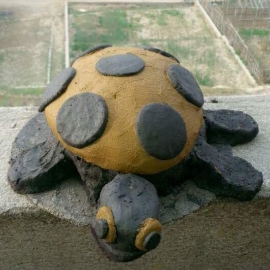

Arts and Design
This page illustrates my artistic work and experience. In this art gallery, I have included some art image collections from different categories.
Typhography and de-stijl projects collection from History of Graphic Design Class

Clay Work Collection
Outside Project Collection


Drawings Collection from Projects in Nursing

Muscle Cards Drawing Project from Anatomy and Physiology Course